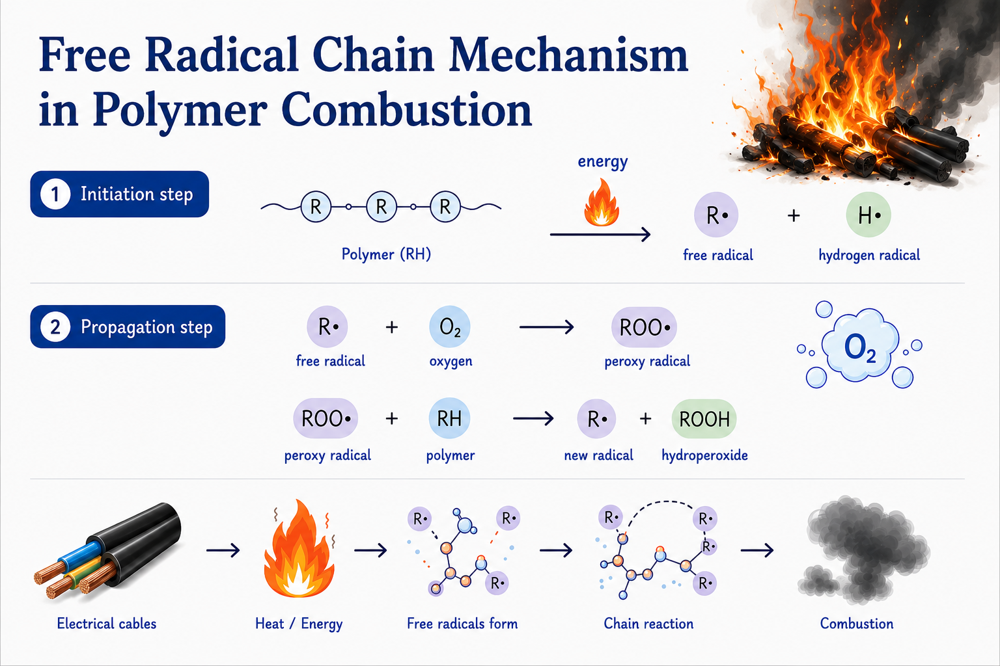

高分子燃燒自由基鏈鎖反應：電線走火如何演變成火災

我們每個月幾乎都會看到一則新聞報導：
「今日幾號幾時幾點，於某地址的住宅/工廠發生大火，起火原因疑似電線走火，消防單位呼籲民眾要注意用電安全。」
電線走火，是一種高分子的燃燒反應。電線內部的銅線是金屬並不容易燃燒，真正引發火災的元兇其實是電線外層的塑料包材，例如 PE（聚乙烯） 或 PVC（聚氯乙烯）。
這些塑料在化學上稱為「高分子」，是由大量的重複單體（如乙烯、氯乙烯），透過共價鍵鍵結而成的大分子。本文將從「高分子燃燒自由基鏈鎖反應（Free Radical Chain Reaction in Polymer Combustion）」的角度，說明高分子材料在受熱後如何逐步分解、產生自由基，最終演變成燃燒反應。
一、高分子燃燒自由基鏈鎖反應（Free Radical Chain Reaction in Polymer Combustion）
首先，當塑膠高分子受到足夠熱能時，高分子鏈中的共價鍵便會斷裂，進而產生烷基自由基（R·）與氫自由基（H·）。此階段稱為初始步驟（Initiation Step）。
自由基不符合八隅體規則，極度不穩定，所以當烷基自由基（R·）又碰到空氣中的氧氣，會迅速生成過氧自由基（ROO·）。
隨後，過氧自由基（ROO·）會再與周圍完好的塑膠高分子反應，產生新的烷基自由基（R·）以及氫過氧化物（ROOH）。此階段稱為傳播步驟（Propagation Step）。
傳播步驟會一直重複發生，這也是火災一旦形成後難以自行停止的原因。只要環境中仍有足夠氧氣與熱能，過氧自由基（ROO·）就會不斷去攻擊塑膠高分子、持續生成新的烷基自由基（R·），而新的 R· 又再次與氧氣反應，變成火場裡沒完沒了的鏈鎖反應 (Free Radical Chain Reaction)。
因此，燃燒若要停止，必須切斷燃料來源、熱源或氧氣其中之一，使燃燒條件無法持續；或藉由抑制自由基鏈鎖反應，促使燃燒反應終止。
二、阻燃劑與塑膠高分子
為了降低塑膠高分子燃燒風險，塑膠與電纜材料中通常會添加阻燃劑，以抑制自由基反應。其中，最常見的系統之一為「鹵素阻燃劑 + 三氧化二銻（Sb₂O₃）」的阻燃組合，可在降低鹵素阻燃劑添加量的同時，維持良好的阻燃效果。
不過，這套阻燃組合，最近在國際供應鏈上遇到了大麻煩。
正如我們在上一期文章提到的，為了應對關鍵材料的全球出口管制風險，市場上的「銻」供應受到顯著限制。由於三氧化二銻是塑膠與電纜產業不可或缺的阻燃材料，供應受限後，市場便容易受到價格與交期影響。
在這種情況下，本公司的 UTFR-NAL 協效劑 ，可作為降低依賴三氧化二銻的材料方案之一，在維持阻燃性能與穩定性的同時，協助電纜與高分子塑膠廠商降低材料成本與供應鏈風險。
← 返回產業資訊列表